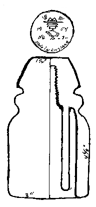
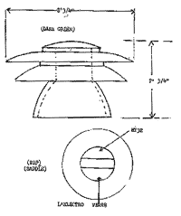
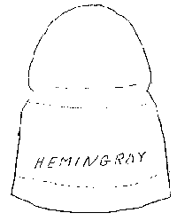
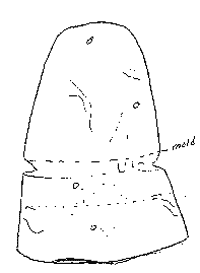

Letters to the Editor
Reprinted from "INSULATORS - Crown Jewels of the Wire", April 1970, page 22
Have been taking the Crown Jewels of the Wire on insulators since it
came out. And cannot wait till it comes each month. Also, it is a
month late getting to me down here (Miami, Florida). I am sending in a
drawing by me on the English Porcelain cream color. They are really very
pretty with a high gloss and fine glaze. Another one comes in about the
same size, but shaped like the African in last month's issue (March 1970, page
18).

I wanted to tell you that last year we put our insulators in the Antique
Bottle Show of Miami, as we belong to the club here. But they didn't put
us in as "Insulators". They put us in under the artistic
category, as we were the first ones to ever enter insulators in the show
here. So this year our show is March 22, and our club members on the
board voted us out of the show because they felt insulators weren't antique
enough. Well, I'll tell you now, my husband Don got up at the club meeting
and raised a lot of Cain and asked for a vote by the people of the club and not
by the board of directors. A special meeting was held, inasmuch as we had shown
slides at the club meeting one evening, having been asked to do so by the
president of last year after seeing our collection at the show.
So we have gotten lots of people down here started from just the show last
year, and a lot of club members started also. So over 75% stood up at the
special meeting on our behalf to have a category for just insulators. So
we got that. Then they said we had to have a least three show insulators
at the show, trying to make us give up. So Don and I got busy, and we have
three people in our own club that are going to show this year. It was a
hard battle, but we told them at the meeting that we were 10 to 15 years behind
times from those out west and that our insulators are antique glass. So we
won.
Have been working hard for over a year to get a good collection and paid out
a lot of money to do so and have gotten lots of people collecting around Miami
and parts of Florida, as I trade and sell all over the U.S.A. So get this
now. Last Antique Bottle meeting we were asked to put on a show of our
insulators and picture slides at the Homestead Air Force Base of Florida to get
them started on a hobby. So I am going this Sunday just to show people
what can be done with the hobby of insulators. Thank you very much for
reading my story. I thought it would be good to tell you and even for a
story in Crown Jewels of the Wire.
Ruby Bryant, "The Cross Arms", 6801 S. W. 144th Street, Miami,
FL 33158
Enclosed is a drawing of the 131 lb. French insulator I mentioned digging up
in a old telephone storehouse in Turinga, New Zealand last June. After
eight months at sea, it has arrived safe and sound.

As it is one of the few foreign power insulators in this size that I have
seen, I thought it might be of interest to your readers. Needless to say,
it is beautiful.
Chris Buys, Boulder, Colorado
You showed a Birmingham No. 10 (CD 106) in your Research Division (May 1969,
page 22). I just traded for one of these plus an unembossed one. It
looks exactly like the embossed one as far as size, color, and glass
texture. They were from the same line. Bob Vangene, Minneapolis,
sent them to me. He stated that the person giving them to him stated that
there were also Lynchburgs of the same type of glass on the same line. Has
anyone found out who manufactured these Birminghams?
Earl N. Armbrust, Jr.
Haven't heard anything on these, but I have a woman's hunch that Lynchburg
Co. had a hand in these. Don has both embossed and unembossed, and I've
looked them over pretty well. Editor
I just received my January issue of Crown Jewels of the Wire. I didn't
realize a year had gone by so fast. I must admit I'm really hooked on this
magazine. Please renew my subscription for another year. I have read
and reread every issue and use these back issues every day for reference.
It seems every month I want to write some comments about different articles that
have been in CJ, but other pressing matters have always held me back.
I really liked (January 1970, page 13) Warren Olson's "About Those
Denvers". I know Warren, and he stopped by one time and we traded
several insulators and a lot of talk. I can only add one type not listed by Warren.
This is a W.F.G.Co. CD 106 pony in clear. I wrote Warren about this also.
Now about Leon Barrett's Lynchburgs . I can also add that I have the
Lynchburg 30, CD 121. The one shown is CD 122. Also, if a person
collects that way, on the "38" there is a large and small 38 &
38-20, also drips and no drips. I also have the 43 (CD 145), which I think
is hard to get.
The Brookfield (January 1970, page 32 saw on a list some year and a half ago,
but it was gone when I tried to trade for it. The only one I've heard of.
The A.E. Co. Inc. is the right embossing on the dry spot. These were used
on dead-end poles only. As they have a wire groove, they can be used as a
main line insulator, but they weren't designed as such. Of all the
railroad linemen I know, none can really explain why they used them. But
when the line came into the depot and dead end on a Hemingray-109 (CD 1070) or
like insulator, these dry spots were pout on a pin above the dead-end.
They would then run the wire through the 4 holes and connect one end to the line
and the other to the line going into the depot. I have the insulator in white
also, which I've seen only a few of. The old linemen say that when they
were first made they came in white, but changed to brown very shortly. The
new style dry spot don't set on a pin, but are laged to the arm with small screw
lags.
Thank you for many hours of enjoyable reading and hobbying.
Ed Saulsbury
I am enclosing a couple of drawings of insulators. I wonder how old
this one is? It has no numbers, only HEMINGRAY.
 3 1/4" x 4 3/8",
aqua, 2" to groove from bottom, threaded.
This insulator has bubbles in it, also lines as though the mold was rough and
the bottom is uneven. It has no visible marking.
 3" x 4", ice blue,
inner skirt 1" up from bottom, threaded
Mrs. Karl Venneberg
I have a Hemingray 40 (CD 152) in aqua with the following embossing:
HEMINGRAY/No 40 on front, HEMINGRAY on back, SDP. Was this a mix up in
molds, or were they made in lots? I have checked through at least 2,000
and have yet to find one like it.
Marvin Park, Sibley, Louisiana
|